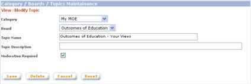

|
Maintain Categories, Boards, and Topics
From this page, you can create /
modify / delete categories, boards, and topics for the Discussion
Forum. Division Administrators & Moderators will be able to
create new topics under boards, Set a topic for moderation. Division
Administrators & Moderators can only create new topics or modify
topics under the board which you are assigned to by the Main Administrator.
a. Click on "Category / Board" button from the left panel of the Admin main page
b. The list of categories, boards, and topics will be displayed in hierarchical form
1. Topics
1.1. Create Topic
a. Click on the "Create Topic" button on the bottom part of the screen
b. In the "Create Topic" page, enter all the details of the topic. Click on "Save" button to create the topic. NOTE: System does not allow duplicate topic name under same board.
1.2. Modify Topic
a. Click on the name of the topic
b. In the "View / Modify Topic" page, make modifications to the details of the topic. Click on "Save" button to save modifications made.

1.3. Delete Topic
a. Click on the name of the topic.
b. In the "View / Modify Topic"
page, click on the "Delete" button to delete the topic. NOTE: System
does not allow a topic to be deleted if the topic still has threads
under it.
|